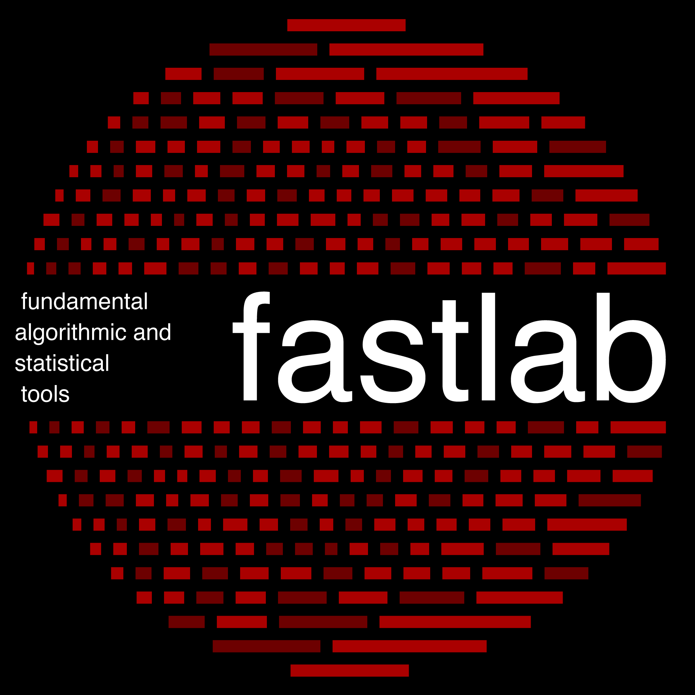
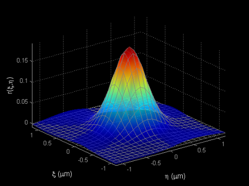

|
Alexander Gray |
|
| CONTACT |
Computational Science and Engineering Division College of Computing, Georgia Institute of Technology 1312 Klaus Advanced Computing Building 266 Ferst Drive, Atlanta, GA 30332-0765 FAX: (404) 385-3468 Office phone: n/a (I don't check my office phone voicemail) agray @ cc.gatech.edu |
| BRIEF BIO |
(Usable for talk announcements) Alexander Gray received Bachelor's degrees in Applied Mathematics and Computer Science from UC Berkeley and a PhD in Computer Science from Carnegie Mellon University, and worked in the Machine Learning Systems Group of NASA's Jet Propulsion Laboratory for 6 years. He currently directs the FASTlab (Fundamental Algorithmic and Statistical Tools Laboratory) at Georgia Tech, consisting of ~20 people including 12 PhD students, which works on the problem of how to perform machine learning/data mining/statistics on massive datasets, and related problems in scientific computing and applied mathematics. Employing a multi-disciplinary array of technical ideas (from discrete algorithms and data structures, computational geometry, computational physics, Monte Carlo methods, convex optimization, linear algebra, distributed computing), the lab has developed the current fastest algorithms for several fundamental statistical methods, and also develops new statistical machine learning methods for difficult aspects of real-world data, such as in astrophysics and biology. This work has enabled high-profile scientific results which have been featured in Science and Nature, and has received a National Science Foundation CAREER award, three best paper awards, and three best paper award nominations. He has given tutorials and invited talks on efficient algorithms for machine learning at venues including ICML, NIPS, SIAM Data Mining, and is a member of the National Academies Committee on the Analysis of Massive Data. He is a frequent invited speaker in the emerging area of astrostatistics/astroinformatics. |
| RESEARCH |

My work focuses on developing the new statistical and computational
foundations demanded by next-generation challenges in data analysis:
Algorithmic and statistical foundations of machine learning and scientific computing. Two challenges which keep increasing in importance and ubiquity are challenges of scale: massive datasets and various curses of dimensionality. I work toward new general algorithmic strategies for dealing with the fundamental ``inner-loop'' computations at the root of large classes of statistics and machine learning methods, both classical and modern. The work is general enough that it impacts other areas of scientific computing, such as physical simulation and linear algebra. I also develop new statistical or machine learning methods. Astrostatistics and other challenge applications in science and engineering. I develop statistical and computational solutions directly driven by and validated by hard real problems in domains of critical modern importance -- mainly, in astrophysics and other areas including biochemistry and medicine, particle physics, and internet applications. Our solutions are disseminated via our unique open-source library. For overview, PhD students, papers, code, and more, see: The FASTlab |
| TEACHING |

Web Search and Text Mining (CSE 6240). Undergraduate and graduate; the algorithms, data structures, and machine learning behind modern information retrieval.
Introduction to Data Mining and Analysis (CS 4245). Undergraduate machine learning -- many modern practical examples as well as the most important mathematical foundations. Computational Data Analysis: Foundations of Machine Learning and Data Mining (CSE 6740). Advanced graduate machine learning; a crash course. Assumes mathematical and computational maturity. Introduction to Graduate Studies (CS 7001). For all incoming computer science PhD students; how to do great research -- the unwritten rules for success in the PhD and a research career. Constructing Proofs (CS 1050). Introduction to mathematical proofs for undergraduates. |
| ACTIVITIES
|
Founder and Chair of the Machine Learning Area in the College of Computing; Organizer of the Georgia Tech Machine Learning and Data Mining Seminar; see Machine Learning @ Georgia Tech.
Co-Principal Investigator of the FODAVA (Foundations of Data Analysis and Visual Analytics) Lead Center at Georgia Tech. Co-Organizer of the Workshop on Large-Scale Machine Learning: Parallelism and Massive Datasets at NIPS 2009. Co-Organizer of the Workshop on Machine Learning and AI Applications in Astrophysics and Cosmology at IJCAI 2009. Co-Organizer of the first annual CoC Research Day, a showcase of the research of the College of Computing, presented by and for students. CEO of Analytics 1305, which produces first-of-a-kind commercial large-scale data analytics software based on the research of the FASTlab. Industrial Liaison for data analytics for CSE. |